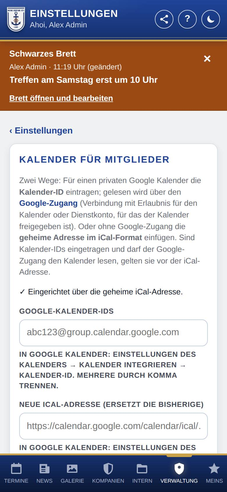
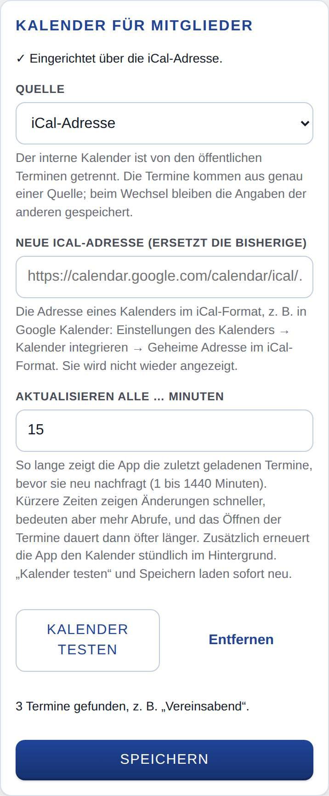

Kalender einrichten
Hier legst du fest, woher der interne Kalender für Mitglieder seine Termine bekommt: direkt aus der App, aus eurem Google Kalender oder über eine iCal-Adresse. Die App zeigt die Termine daraus angemeldeten Mitgliedern. Der interne Kalender ist von den öffentlichen Terminen getrennt.

So öffnest du die Seite
Tippe unten auf Verwaltung, dann auf Einstellungen und unter Termine und Kalender auf Kalender. Darunter steht, wenn der Bereich an ist, der Abschnitt Geburtstage. Im Einrichtungsassistenten steht derselbe Abschnitt im Schritt für den Kalender.
Was du hier siehst
- Kalender für Mitglieder: der Abschnitt für den internen Kalender.
- Eine Zeile, wie der Kalender gerade eingerichtet ist, z. B. ✓ Die Termine werden in der App gepflegt., ✓ Eingerichtet über die iCal-Adresse. oder Noch kein Kalender eingerichtet.
- Quelle: woher die Termine kommen, In der App pflegen, Google Kalender (Kalender-IDs) oder iCal-Adresse. Es gilt immer genau eine Quelle.
- Google-Kalender-IDs: nur bei der Quelle Google Kalender.
- iCal-Adresse (oder, wenn schon eine gespeichert ist, Neue iCal-Adresse (ersetzt die bisherige)): nur bei der Quelle iCal-Adresse.
- Aktualisieren alle … Minuten: nur bei Google Kalender und iCal-Adresse; wie lange die App die geladenen Termine zeigt, bevor sie neu nachfragt (Standard 15). Für die Benachrichtigungen über neue und geänderte Termine fragt die App unabhängig davon alle 15 Minuten nach.
- Kalender testen und Entfernen: erscheinen bei Google Kalender und iCal-Adresse, sobald der Kalender eingerichtet ist.
- Speichern: übernimmt die Eingaben.
So gehst du vor
Termine direkt in der App pflegen (ohne Google)
- Wähle bei Quelle In der App pflegen.
- Tippe auf Speichern. Die App legt dabei die Rolle Kalender verwalten an, falls es sie noch nicht gibt.
- Gib die Rolle oder das Recht Kalender pflegen allen, die interne Termine eintragen sollen (siehe Rollen und Rechte). Als Admin darfst du es ohnehin.
- Die Termine legst du dann unter Termine → Internen Kalender verwalten an.
Kalender über eine iCal-Adresse verbinden (ohne Google-Zugang)
- Öffne in Google Kalender beim Kalender der Kompanie ⋮ → Einstellungen und Freigabe und dort Kalender integrieren.
- Kopiere die Geheime Adresse im iCal-Format.
- Wähle in der App bei Quelle iCal-Adresse, füge die Adresse bei iCal-Adresse ein und tippe auf Speichern.
Kalender über den Google-Zugang verbinden (auch für private Kalender)
- Richte zuerst den Google-Zugang ein. Bei „Mit Google verbinden“ muss dabei das Häkchen für Google Kalender gesetzt sein; ein Dienstkonto braucht eine Freigabe des Kalenders („Alle Termindetails sehen“).
- Kopiere in Google Kalender unter ⋮ → Einstellungen und Freigabe → Kalender integrieren die Kalender-ID. Beim Hauptkalender eines Kontos ist das dessen E-Mail-Adresse.
- Wähle in der App bei Quelle Google Kalender (Kalender-IDs) und trage die ID bei Google-Kalender-IDs ein. Mehrere trennst du durch Komma.
- Tippe auf Speichern.
Die Quelle wechseln
- Wähle bei Quelle eine andere Quelle und ergänze, was sie braucht.
- Tippe auf Speichern. Ab dann zeigt die App nur noch die Termine der neuen Quelle. Die Angaben und in der App gepflegten Termine der bisherigen Quelle bleiben gespeichert und erscheinen wieder, wenn du zurückwechselst.
- Wechselst du weg von In der App pflegen, verschwindet die Rolle Kalender verwalten, wenn sie niemand hat.
Einstellen, wie schnell Änderungen erscheinen
- Trage bei Aktualisieren alle … Minuten eine Zahl von 1 bis 1440 ein (1440 Minuten sind ein Tag).
- Tippe auf Speichern. Der neue Wert gilt sofort, und die Termine werden neu geladen.
Prüfen, ob der Kalender ankommt
- Tippe auf Kalender testen.
- Die App zeigt, wie viele kommende Termine sie gefunden hat, z. B. „5 Termine gefunden, z. B. „Schützenfest“.“ Lehnt Google ab, nennt die Meldung die wahrscheinliche Ursache.

Den Kalender entfernen
- Tippe auf Entfernen und bestätige die Rückfrage. Alle Angaben zum Kalender werden gelöscht.
Gut zu wissen
- Änderungen im Google Kalender, z. B. ein gelöschter Termin, erscheinen in der App spätestens nach der eingestellten Zeit. Kürzere Zeiten zeigen sie schneller, bedeuten aber mehr Abrufe bei Google, und das Öffnen der Termine dauert dann öfter länger. Zusätzlich erneuert die App den Kalender stündlich im Hintergrund. Sofort neu geladen wird beim Speichern und bei Kalender testen.
- Die iCal-Adresse zeigt die App nach dem Speichern nicht wieder an. Eine neue Adresse ersetzt die bisherige.
- Hast du den Kalender eingerichtet, bevor es die Auswahl der Quelle gab, gilt bis zum nächsten Speichern das Eingetragene wie bisher: Kalender-IDs vor der iCal-Adresse.
- Darf die Verbindung mit Google den Kalender nicht lesen, steht das auf dieser Seite und unter Zustand und Updates. Dann trennst du unter Google-Zugang die Verbindung und verbindest neu, mit dem Häkchen für den Kalender.
- Der Kalender erscheint für die anderen erst, wenn der Bereich an und ein Kalender eingerichtet ist (siehe Bereiche).
- Mit WordPress gibt es die Felder für Google Kalender und die iCal-Adresse auch im WordPress-Backend auf der Seite der App (dort mit Speichern und testen), auch Aktualisieren alle … Minuten, dazu ein Feld für einen eigenen Google-API-Schlüssel für öffentliche Kalender. Ist er eingetragen, geht er bei Kalender-IDs vor. Die Quelle wählst du nur hier in der App.